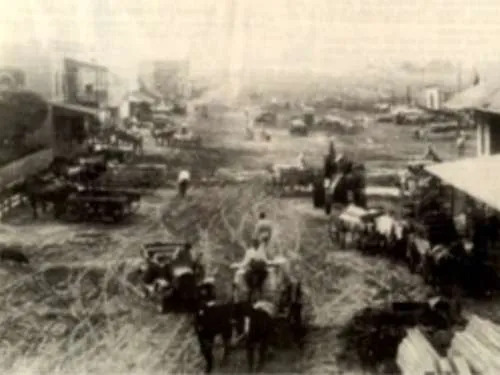
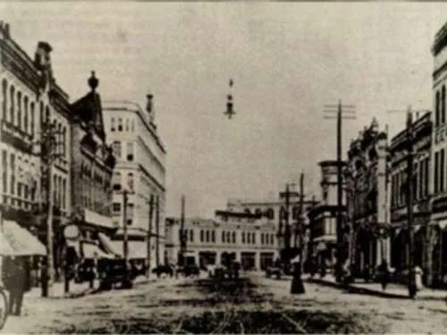
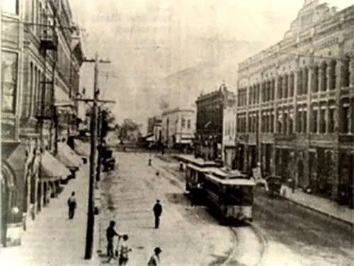

Established in 1860, at the junction of the Mobile and Ohio Railroad and Southern Railway of Mississippi, Meridian built an economy based on the railways and goods transported on them, and it became a strategic trading center. During the Civil War, General William Tecumseh Sherman burned much of the city to the ground in the Battle of Meridian (February 1864). Rebuilt after the war, the city entered a "Golden Age". It became the largest city in Mississippi between 1890 and 1930, and a leading center for manufacturing in the South, with 44 trains arriving and departing daily. Union Station, built in 1906, is now a multi-modal center, with access to Amtrak and Greyhound Buses averaging 242,360 passengers per year. Although the economy slowed with the decline of the railroad industry, the city has diversified, with healthcare, military, and manufacturing employing the most people in 2010. The population within the city limits, according to 2008 census estimates, is 38,232, but a population of 232,900 in a 45-mile (72 km) radius and 526,500 in a 65-mile (105 km) radius, of which 104,600 and 234,200 people respectively are in the labor force, feeds the economy of the city.

Front Street was a dirt road at the turn of the century, and the first Union Passenger Depot had not been built. This stretch is Front Street between 26th and 27th Avenues. On the left is a white picket fence encircling a private residence, where a pig has wandered into the street. In the middle ground is a steam-powered tractor, standard at the time. In the hazy distance is the site where the first depot would be built.

The long stretch of 22nd Avenue featured three department stores. To the left were the Dumont Department Store and the Marks-Rothenberg Department Store. To the right was Winner and Kline Department Store. Also to the right is Weidmann’s Restaurant, which is still in operation. In the center of the photograph is the Threefoot Brothers Wholesale Company, the present location of The Threefoot Hotel.

This photograph shows Fifth Street looking east. The Rosenbaum Building, now condominiums on the near right. Farther down the block is the Arky Building, now the site of Dumont Plaza. On the left are the Great Southern Hotel and First National Bank. The city was served by electric streetcars.
The photograph shows the damage to Union Station Passenger Depot on Front Street after a tornado leveled much of downtown Meridian in March 1906. Martial law was declared, and the man standing with a shovel to the left was a doughboy soldier sent in to help with the cleanup.